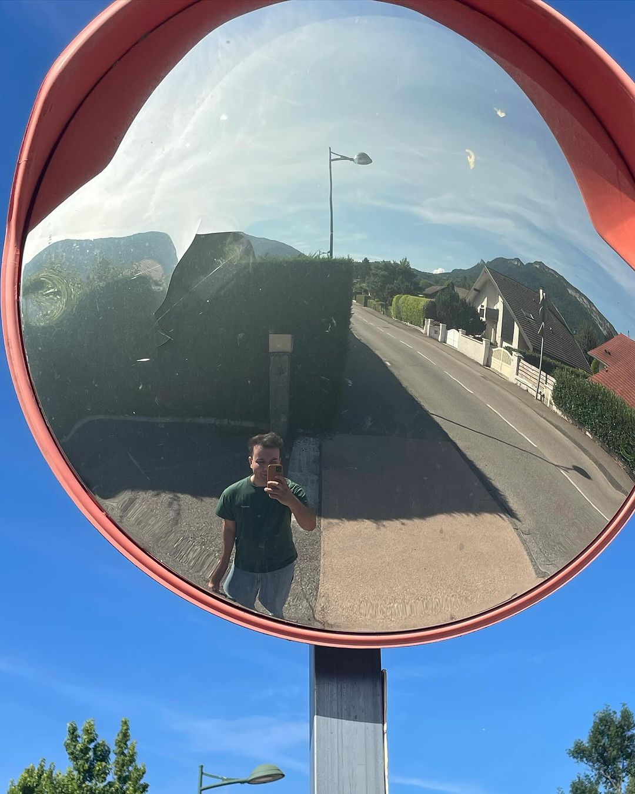

Mijn naam is Yaro Vennekens en ben 20 jaar oud 🎉
en ben een graduaat student programeren aan Thomas More te Geel 🇧🇪
Het middelbaar 🫠heb ik afgrond in de richting auto mechanica âš™ï¸
hier heb ik mezelf 🙋 vervolgens ook verder verdiept in een specalisatie jaar,
in dit jaar verdiepte we ons nog verder in het technische aspect 🔧
van een auto 🚘, vervolgens zagen we hier dus ook software 👨‍💻
en kreeg daar door hier een enorme intresse in.
👨‍💻Programeren
🏎️ Auto's
🕺 Muziek